Decomposition as a Tool for Managing Complexity
Systems Architecture · Chapter 13
From Concept to Complexity
- Chapter 12 selected the concept — the mapping from function to form. Once that choice is made, the scope and information content of the project can grow exponentially: resources are added per subsystem, marketing shapes the message, manufacturing plans in earnest
- A central theme of this chapter: complexity exists and is inherently neither good nor bad — it is an investment made to reach system goals
- We first unpack the attributes of complexity (§13.2), then turn to decomposition as the architect’s key lever for managing it (§13.3), closing with a case study contrasting Saturn V and Space Station Freedom
13.2 Understanding Complexity
What Is Complexity?
Box 13.1 · Definition: Complexity. Several simple measures: N1 = number of things, N2 = number of types of things, N3 = number of interfaces, N4 = number of types of interfaces.
\[C = N_1 + N_2 + N_3 + N_4\]
- The most-quoted measure of complexity is simply N1: Microsoft cites servers in its data centers; Boeing cites parts (6 million) in the 747
- Analogously, N3/N4 capture interfaces and interface types — a building’s electrical system is more complex if its outlets are of many types (US, UK, EU, AU…)
- A variation: Boothroyd & Dewhurst’s formal complexity \(C = (N_1 \times N_2 \times N_3)^{1/3}\). Complexity is an absolute, quantifiable property once “measure” and “atomic level” are defined — regard it as a quantity to be managed, not an intractable outcome to be ignored
Figure 13.1 · A Real (but Unwieldy) Complexity Measure
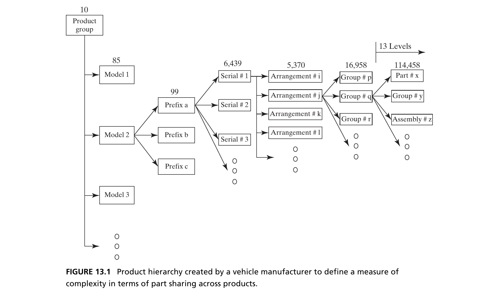
A vehicle manufacturer’s attempt to define complexity via part-sharing across a 13-level product hierarchy. The measure was not incorrect — but it was so cumbersome (the decomposition itself was never agreed upon) that it went unused. Source: Crawley, Cameron & Selva (2016), Fig. 13.1.
Complex versus Complicated
- Complexity is a negative-sounding property, yet complex systems (transportation infrastructure, networked communication) deliver far more value than simple counterparts (bicycles, letter mail)
- Chapter 3 introduced complicated as a measure of our ability to perceive and comprehend complexity. Complicated things have high apparent complexity (complicatedness) — our human processor is more easily confused
- The pyramids were structurally less complicated than the Taj Mahal — but we leave comparing their emergent aesthetics to the reader’s judgment and taste
Box 13.2 · Principle of Apparent Complexity
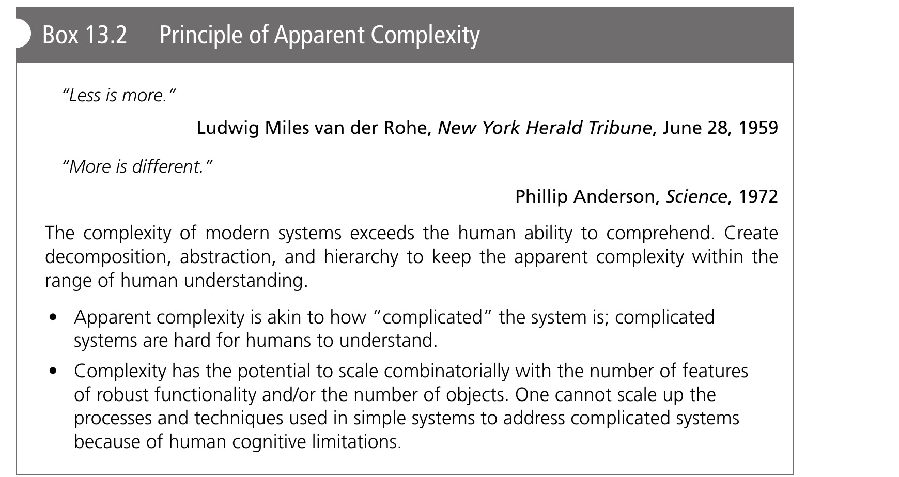
Figure 13.2 · Complicatedness in Civil Architecture
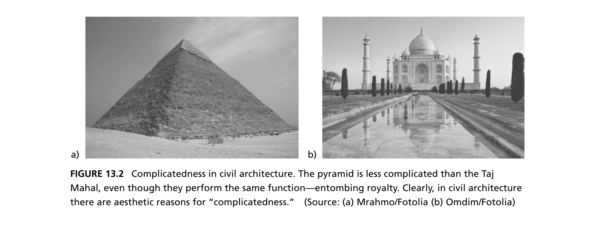
The pyramid is less complicated than the Taj Mahal, even though both perform the same function — entombing royalty. In civil architecture there are aesthetic reasons for “complicatedness.” Source: Crawley, Cameron & Selva (2016), Fig. 13.2.
Figure 13.3 · A Complicated Network
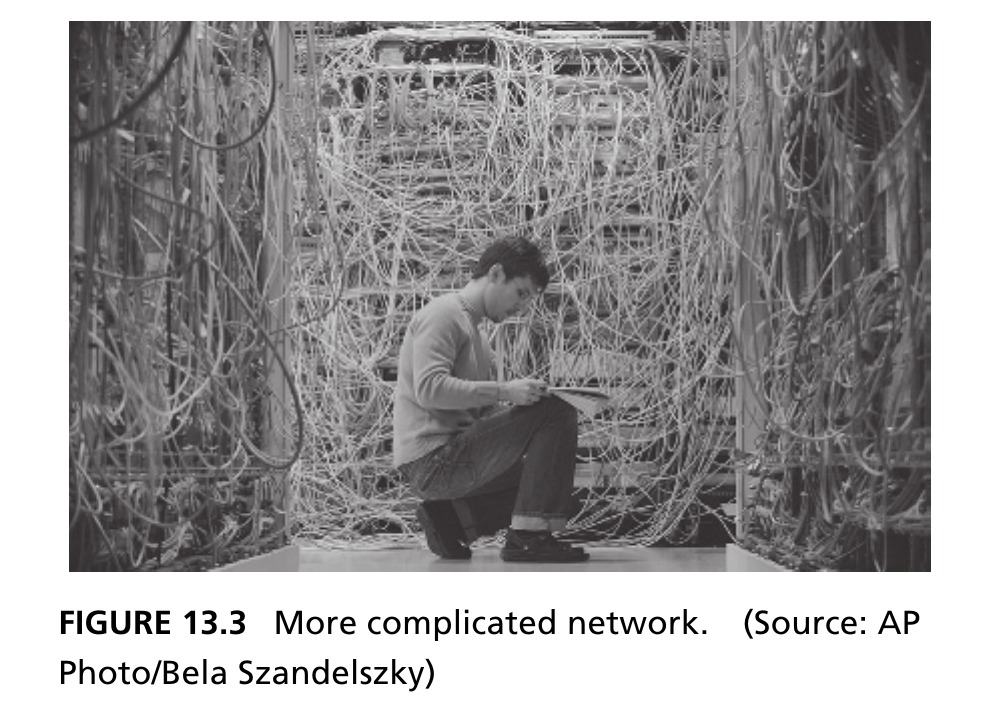
The same function is delivered by Figures 13.3 and 13.4, and the inputs/outputs at an electrical layer are identical — but one architecture is far less complicated and more amenable to analysis and modification. Source: Crawley, Cameron & Selva (2016), Fig. 13.3.
Figure 13.4 · The Same Network, Organized
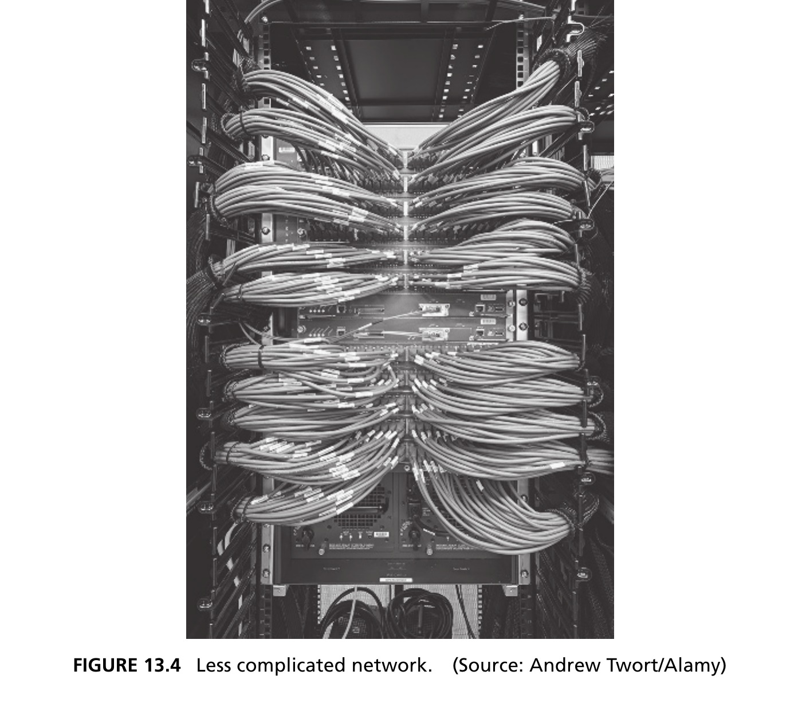
Decomposing the network into cables, routers, and racks — and abstracting a bundle of cables into a single “bus” — makes the organization legible without changing what the network does. Source: Crawley, Cameron & Selva (2016), Fig. 13.4.
Reducing Apparent Complexity
- The word “organized” is fuzzy — it doesn’t reduce to a step-by-step process. We unpack it with Chapter 3’s tools: decomposition and abstraction
- A cable can be treated as an instance of a class of entities sharing functionality; a bundle of cables tied together can be abstracted as a single bus, releasing the viewer from tracking each cable
- Is Figure 13.4 at maximum organization? Not necessarily — a layered diagram could abstract out the cable-routing detail entirely, at the cost of “presuming” the cables are routed correctly
Tip
Low-level languages (assembly) are hard even for experienced programmers. High-level languages (JAVA, MATLAB) reduce apparent complexity — MATLAB inverts a matrix in one instruction. For some users this investment is merited; for others it costs performance or scalability.
Essential Complexity
- Complexity is absolute, and the architect must invest in it to deliver more performance and functionality. This begs the question: is there a minimum complexity required to deliver a given function and performance?
- Yes — we call this the essential complexity. Functionality drives essential complexity: describe the required functionality carefully, then choose a concept that produces low complexity
- Gratuitous complexity is complexity added over and above the essential complexity for a given robust functionality — it should be avoided
Box 13.3 · Principle of Essential Complexity
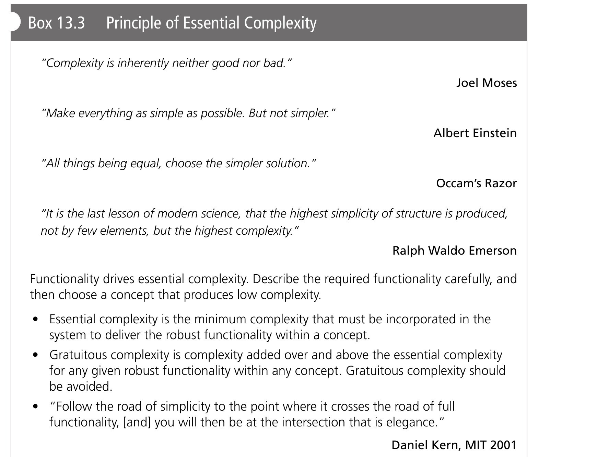
Figure 13.5 · Is This Complexity Essential?
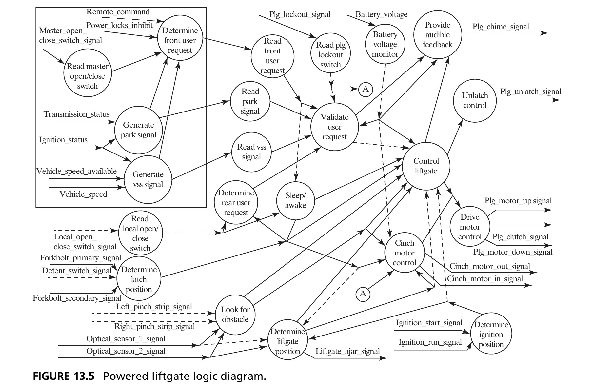
A powered liftgate’s logic: circles are processes, lines are signals. A minimum system (switch + reversing logic) wouldn’t capture the function that prevents opening while the vehicle moves. It’s hard to argue this diagram contains gratuitous functions or forms — but does it also carry gratuitous complexity inherited from legacy architectures? Source: Crawley, Cameron & Selva (2016), Fig. 13.5.
Figure 13.6 · Apparent ≠ Essential
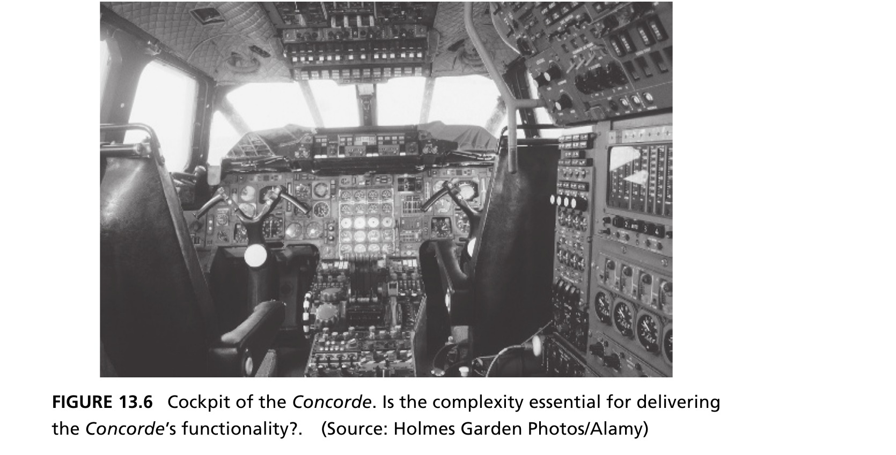
A system’s essential or gratuitous complexity is independent of its apparent complexity. The Concorde’s flight deck is visually overwhelming and required extensive training — high apparent complexity. Given the Concorde’s success, that complexity could be argued essential to delivering its performance with the technology of the era. Source: Crawley, Cameron & Selva (2016), Fig. 13.6.
Figure 13.7 · Low Apparent, High Actual
The smartphone’s touchscreen interface has very low apparent complexity — little or no training to operate — while masking substantial internal hardware complexity. No one would argue the Concorde’s interface should be condensed to a menu, four buttons, and scrolling — but is the phone’s hidden complexity essential, or gratuitous? Source: Crawley, Cameron & Selva (2016), Fig. 13.7.
Figure 13.8 · Decomposition Has a Price
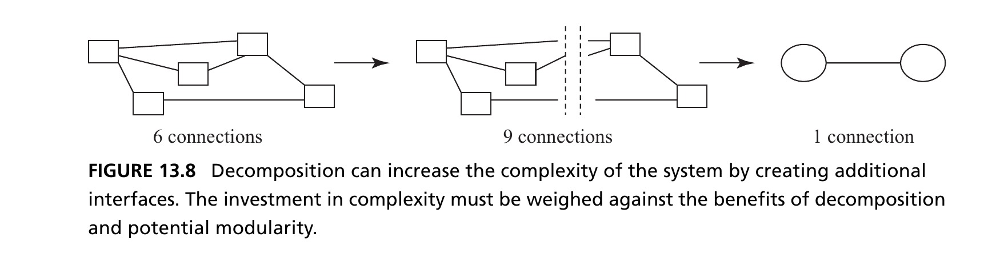
Five entities, six connections (left). Grouping into two clusters of three and two apparently simplifies the system to one connection (right) — but the decomposition introduces an interface between the groups: the system now has six entities and nine connections (middle)! Reducing apparent complexity can increase actual complexity. Source: Crawley, Cameron & Selva (2016), Fig. 13.8.
- The architect must decide whether to invest in actual complexity (to bring down apparent complexity), or not to invest at all
Box 13.4 · Principle of the 2nd Law
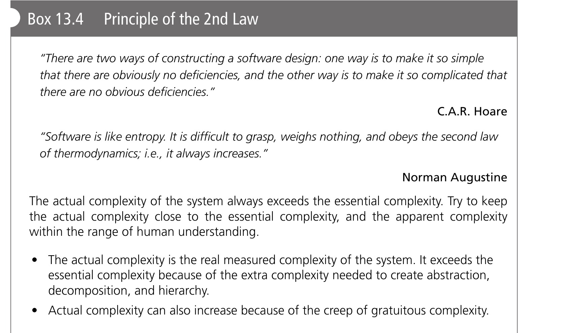
iDrive, a cautionary tale. BMW’s first iDrive consolidated dashboard switches under one twist/angle/press controller to reduce apparent complexity — but the menu ended up five levels deep to reach the heater. Reducing apparent complexity of the switches caused a net increase in apparent complexity of the menu.
Section 13.2 Summary
- Complexity is absolute and quantifiable (\(C = N_1+N_2+N_3+N_4\)); complicatedness (apparent complexity) measures our ability to perceive it — the two are related but not the same, and can be manipulated somewhat independently
- Essential complexity is the minimum needed to deliver required functionality; gratuitous complexity is everything invested beyond that, and should be avoided
- Decomposition and abstraction can reduce apparent complexity, but frequently at the cost of increasing actual complexity (new interfaces) — that investment must be a deliberate choice, not an accident
13.3 Managing Complexity
Choosing a Decomposition
- Chapters 2–3 gave us abstraction, decomposition, hierarchy, and logical relationships (class/instance, type/specialization, recursion) — tools to represent architecture while removing irrelevant detail
- Modern engineering is entwined with the Bill of Materials — a very concrete decomposition down to purchased components. But it doesn’t necessarily lend itself to functional decomposition of the concept
- A functional decomposition determines which subsystems accomplish which functions, which functions are necessarily emergent, and carries the architecture’s intent down through the design — objectives not served by a purely formal decomposition
Box 13.5 · Principle of Decomposition
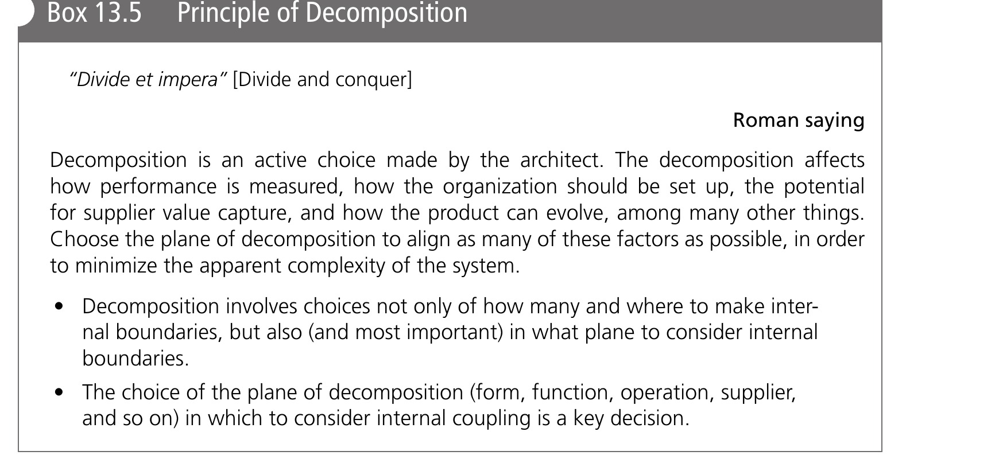
- A bad example: decomposing operations by nominal get-ready/get-set/go/get-unset/get-unready focuses on the typical case, omitting fault conditions, contingencies, and commissioning
“2 Down, 1 Up”
- How do we judge the “goodness” of a decomposition? The decomposition at Level 1 cannot be evaluated until we descend to Level 2
- Analogy: decomposing a class of 30 students into two groups. We won’t know if it’s useful until we see the Level 2 structure — decomposition by height, or by visual impairment, serve very different purposes
- The real information about how to cluster at Level 1 is present in the structure and interaction two levels down from the reference
Figure 13.9 · Illustration of “2 Down, 1 Up”
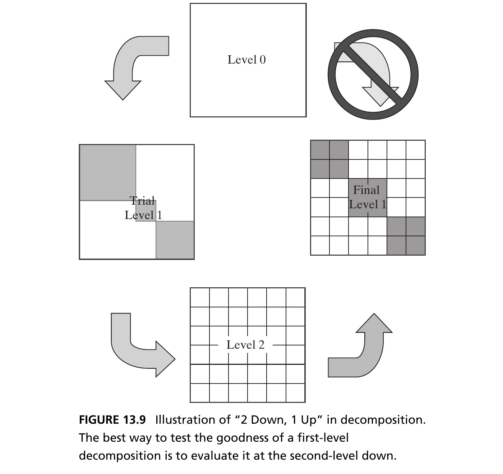
Box 13.6 · Principle of “2 Down, 1 Up”
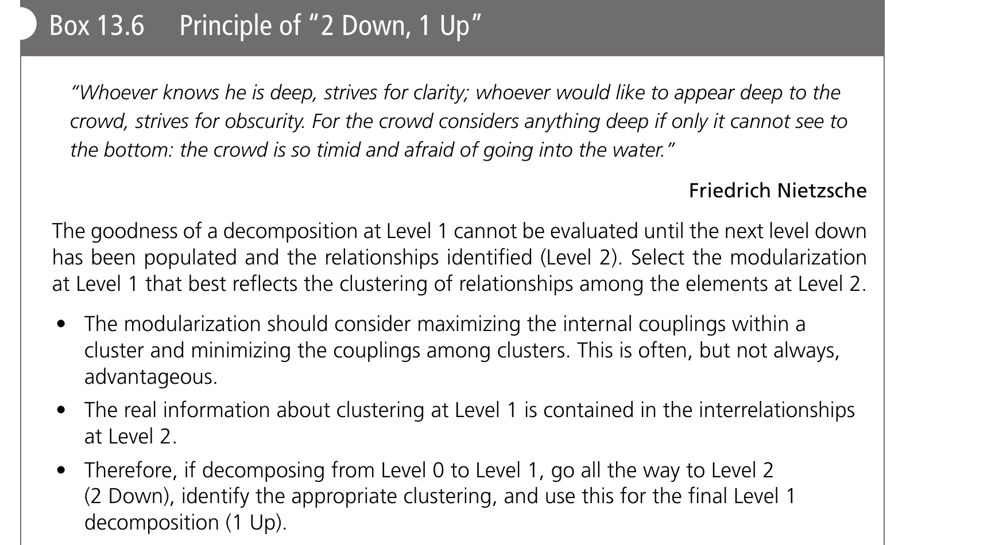
How Many Elements per Level?
- Chapter 8’s air transportation service example works exactly this way: start from the Level 0 concept, propose a Level 1 trial decomposition organized by sequence, decompose to Level 2, examine clustering there, and only then finalize Level 1
- Experience suggests humans manage 7 ± 2 elements comfortably at each level of decomposition
- More than nine elements inhibits the designer and makes cross-element analysis combinatorially harder; fewer than five forces deeper decompositions (more levels, harder to “think vertically”)
Modularity and Decomposition
- The choice of decomposition is linked to the resulting system’s modularity — often called desirable, rarely clearly defined
- Modularity refers to a system’s interfaces: a system is modular if its interfaces allow old modules to be removed and new ones inserted — most commonly in the context of an open number of variants (Lego’s interface enables an open, if not infinite, number of shapes)
- Commonality/platforms refer instead to a closed set of variants (e.g., an alternator bracket for three known variants). Commonality focuses on cost-saving part/code sharing; modularity focuses on operational and design flexibility — related but distinct ideas
Decomposition Plane: A Worked Example
- DSMs (Chapter 8) let the architect analyze a system against a clear objective — minimizing interconnections. But is minimizing interconnections always the right principle for decomposing a system?
- The two key ideas in decomposition are the number of elements/chunks (the easy part) and the plane of decomposition (the hard part)
- Consider a technical report on three concepts, each subjected to three types of analysis. The chapters could be organized by concept (Figure 13.10) — enabling broad cross-analysis judgment — or by analysis, enabling direct comparison of concepts against a metric. Neither is inherently right; the choice is a lens that enables creativity along one plane while repressing it along others
Figure 13.10 · Potential Decomposition Planes
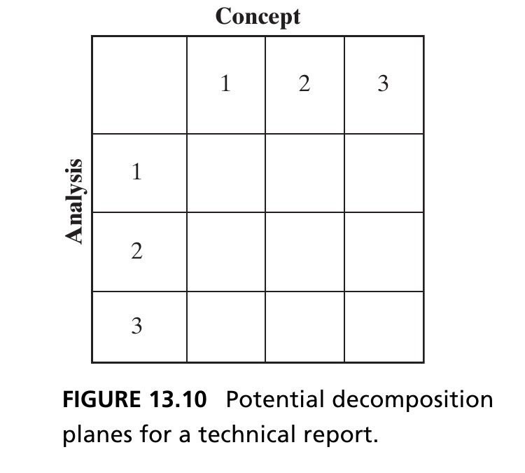
Box 13.7 · Principle of Elegance
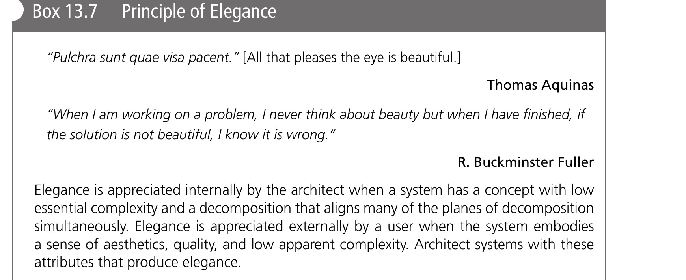
- The choice of decomposition plane is a strong lever on the elegance of the resulting architecture
Form vs. Function Decomposition
- Form decomposition allocates one or more elements of form to each Level 1 entity — form is clearly divided (e.g., Hybrid Car by body, chassis, drivetrain, interior). Advantage: concrete, and properties like mass sum linearly, without emergence
- Function decomposition lists system functions as the Level 1 entities (support/comfort passengers, store energy, produce power, isolate passengers from vibration…). This highlights which types of emergence the decomposition will force the architect to confront
- There is no reason form and function are the only two decomposition planes — a firm’s competitive advantage might instead hinge on the interface between two dissimilar suppliers
Figure 13.11 · Form vs. Function
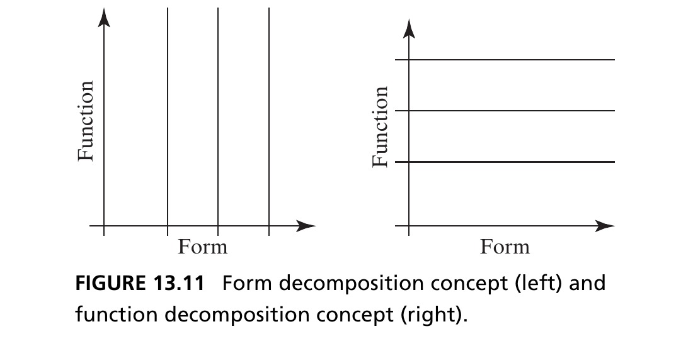
Conway’s Law
Conway’s Law (1968): “Organizations which design systems are constrained to produce designs which are copies of the communication structures of these organizations.”
- The modularity of a system is inextricably intertwined with the organization that develops it — cited as a storyline for the Mars Climate Orbiter failure (two teams, metric vs. imperial units, wrong orbital-insertion altitude)
- The best formulation: product and organization are coupled, not simply “product mirrors organization” or vice versa. Modern research finds strong evidence for a causal link between organization and product modularity in software
The Cost of Modularity
- It is easy to argue more modularity is better. But modularity carries a cost — recall Figure 13.8: even where interfaces already exist, building modularity into an interface means meeting a range of performance goals (extra structural loads, unused connector pins, and so on)
Tip
Alan Perlis: “Wherever there is modularity there is the potential for misunderstanding: hiding information implies a need to check communication.”
- Box 13.8 catalogs 12 potential decomposition planes — by no means exhaustive — with guidance on each. Alignment of these planes can produce more elegant decompositions, where possible
Box 13.8 · Potential Planes for Decomposition (1/4)
| Plane | Guidance |
|---|---|
| Delivered function & emergence | Don’t spread key delivered functions across many elements — it complicates managing emergence. |
| Form & structure | Cluster high-connectivity elements; avoid placing interfaces where connectivity is high. |
| Design latitude & change propagation | Group tightly-coupled designs to maximize latitude and limit change propagation. |
| Changeability & evolution | Place interfaces so modules can combine into platforms and support evolution. |
Box 13.8 · Potential Planes for Decomposition (2/4)
| Plane | Guidance |
|---|---|
| Integration transparency | Create interfaces that enable easy testing and visibility at the interface. |
| Suppliers | Interface points let suppliers work independently — they can define modularity, or defy it. |
| Openness | Balance third-party innovation/network effects against information-sharing drawbacks. |
| Legacy components | Reuse of legacy components constrains decomposition and challenges interface design. |
Box 13.8 · Potential Planes for Decomposition (3/4)
| Plane | Guidance |
|---|---|
| Clockspeed of technology change | Let technologies evolving at different rates be changed out asynchronously. |
| Marketing & sales | Enable differentiating features and cosmetic refreshes without architectural change. |
| Operations & interoperability | Delineate operator touch points and wear parts for easy training, maintenance, repair. |
Box 13.8 · Potential Planes for Decomposition (4/4)
| Plane | Guidance |
|---|---|
| Timing of investment | Modularize to phase development spending across time. |
| Organization | Match the modularization of the system to the organization (Conway’s Law). |
Section 13.3 Summary
- The decomposition of a system is one of the architect’s most powerful decisions — a poor decomposition can break lines of communication or hurt future modularity
- Test a decomposition’s goodness by the Principle of 2 Down, 1 Up: descend to Level 2, examine the aggregation, and only then finalize Level 1
- Many planes of decomposition are possible (form, function, supplier, operation, and Box 13.8’s twelve more) — the architect must judge which emphasis matters and align planes where possible, in pursuit of elegance
13.4 Chapter Summary
- Managing complexity is a central task of the architect. Apparent complexity (complicatedness) is distinct from essential complexity, which is driven purely by required functionality
- The architect invests in abstraction, hierarchy, decomposition, and recursion to reduce apparent complexity — potentially at the cost of increasing actual complexity
- The goodness of a decomposition is judged by testing it two levels down (2 Down, 1 Up); many decomposition planes are possible, and the architect must choose deliberately
Tip
Reference: Crawley, E., Cameron, B., & Selva, D. (2016). System Architecture: Strategy and Product Development for Complex Systems. Pearson. Chapter 13.
Case Study: Decomposition of Saturn V and Space Station Freedom
Box 13.9 · Two Complex Space Systems
- We compare two complex space systems: the Saturn V launch vehicle (1960s) and Space Station Freedom (proposed, 1980s) — to illustrate the importance of alignment across planes of decomposition
- Thesis: the Saturn V shows good alignment across decomposition planes; the Space Station presents a far more coupled, complex picture — and the relative success of the two programs can be partly attributed to this difference
Saturn V: The Launch Vehicle
The Saturn V, developed by NASA 1962–1968, launched the Apollo Command Service Module, Lunar Module, and crew from Earth’s surface into orbit and toward the Moon. Its solution-neutral function: accelerate a payload by a change in velocity (Delta-ν) in each of three stages. Source: Crawley, Cameron & Selva (2016), Fig. 13.12.
Table 13.1 · Saturn V — Function & Supplier Arrays
| Stage 1 | Stage 2 | Stage 3 | |
|---|---|---|---|
| Stage 1 | Delta ν1 | ||
| Stage 2 | Delta ν2 | ||
| Stage 3 | Delta ν3 |
| Stage 1 | Stage 2 | Stage 3 | |
|---|---|---|---|
| Stage 1 | TGLA | ||
| Stage 2 | L | TGLA | |
| Stage 3 | L | TGLA |
| Stage 1 | Stage 2 | Stage 3 | |
|---|---|---|---|
| Stage 1 | Boeing | ||
| Stage 2 | North American | ||
| Stage 3 | McDonnell |
T-creating thrust, G-creating guidance torques, L-carrying structural load, A-reacting aerodynamic loads. Source: Crawley, Cameron & Selva (2016), Table 13.1.
Table 13.1 · Saturn V — Operation Array
| Stage 1 | Stage 2 | Stage 3 | |
|---|---|---|---|
| Stage 1 | Fire 1 | ||
| Stage 2 | Fire 2 | ||
| Stage 3 | Fire 3 |
- Nominal operations: fire Stage 1, drop Stage 1, fire Stage 2, drop Stage 2, fire Stage 3 — a simple sequential set. While any one stage operates, no other attached stage is active
Why the Saturn V Succeeded
- The Solution-Neutral Function, Supplier, and Operation arrays each suggest a sparse, uncoupled relationship among elements of form, and a strong potential alignment of decomposition planes — the Internal Function array is the deliberate exception
- The key architectural decision: replicate each principal internal function (thrust, guidance, structural load, aerodynamic loads) in every stage — the only important internal interface was the structural-load path (L) transmitting force up the stack
- This replication created some sub-optimality (a single guidance system could have served the whole vehicle) — but let each supplier integrate and test its stage nearly independently, with dead-simple inter-stage interfaces (a bolt pattern plus a few wires)
Tip
The Saturn V was the largest launch vehicle ever built and had a perfect launch record — alignment of decomposition planes, simple interfaces, decentralized testing, and simple integration were major contributors.
Space Station Freedom
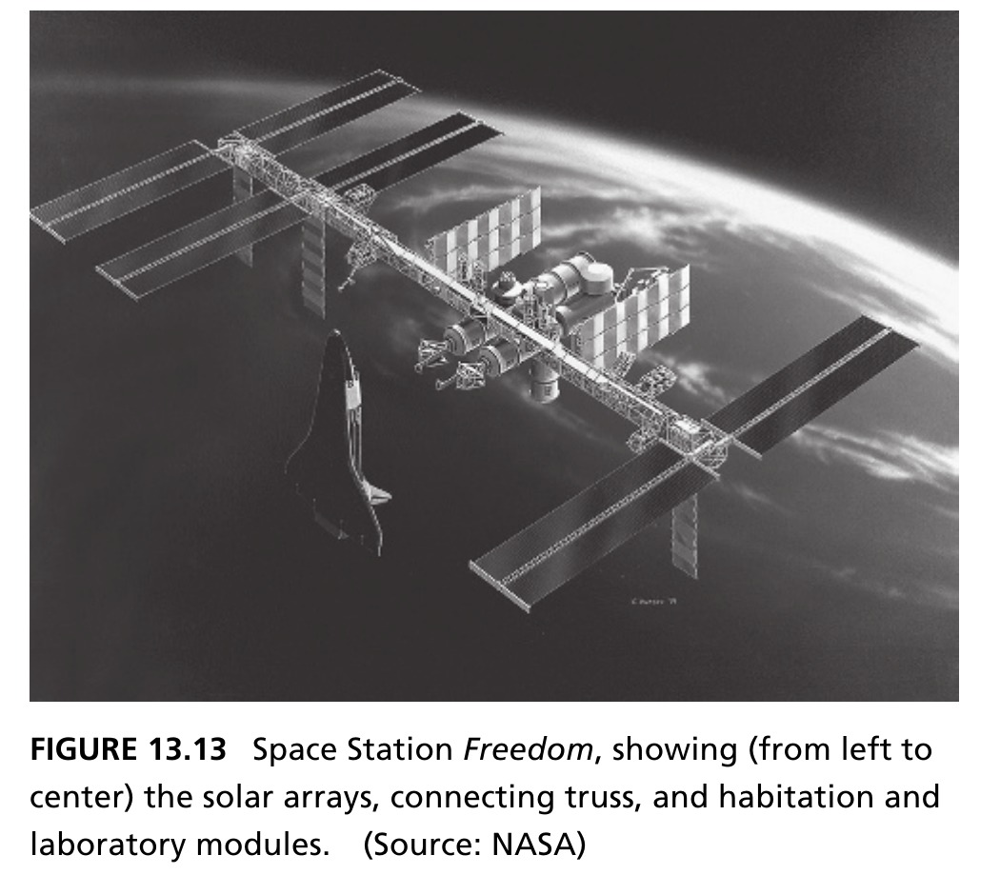
Space Station Freedom (SSF), a semi-permanent Earth-orbiting station announced in 1984, was never built — over a decade it underwent design changes and eventually evolved into the International Space Station (1993). Source: Crawley, Cameron & Selva (2016), Fig. 13.13.
- Solution-neutral function: a laboratory for micro-gravity science and Earth observation, a base for space operations, and — a strong Cold-War political function — cementing international relationships (elements from Europe, Canada, Japan)
Table 13.2 · SSF — Function Arrays
| Solar Array | Truss | Modules | |
|---|---|---|---|
| Solar Array | ISM | ISM | ISM |
| Truss | ISM | ISM | ISM |
| Modules | ISM | ISM | ISM |
| Solar Array | Truss | Modules | |
|---|---|---|---|
| Solar Array | PL | PL | P |
| Truss | PL | PLEA | PLE |
| Modules | P | PLE | PLEC |
Left legend: I-international relationships, S-space operations, M-micro-gravity science. Right legend: P-provide power, L-carry structural load, E-conduct experiments, A-attitude control, C-house crew. Source: Crawley, Cameron & Selva (2016), Table 13.2.
Table 13.2 · SSF — Supplier & Operation Arrays
| Solar Array | Truss | Modules | |
|---|---|---|---|
| Solar Array | R | R | R |
| Truss | R | RM | RM |
| Modules | R | RM | RMB |
| Solar Array | Truss | Modules | |
|---|---|---|---|
| Solar Array | 1 | 1 | |
| Truss | 1 | 123 | 23 |
| Modules | 23 | 23 |
Left legend: R-Rocketdyne, M-McDonnell Douglas, B-Boeing. Right: entries are Shuttle flight numbers (MB-1, MB-2, MB-3) from the 1987 manifest. Source: Crawley, Cameron & Selva (2016), Table 13.2.
A Crisis in Decomposition
- The Solution-Neutral Function array is dense (ISM everywhere) — the function plane gives almost no guidance for modularization. The Internal Function array shows power and structural load extending to every element
- Each piece of form was part of an element (truss, laboratory), part of a system (thermal control, power), and part of a launch package (flight 1, flight 2) — four separate NASA center/supplier teams were responsible across both elements and systems
- The Operation array (1987 manifest) defied every other alignment — assembly flights were sequenced to maximize payload utilization, with mating components not planned to meet until on-orbit
Ten years of SSF development, roughly $10 billion spent, only modest progress. In 1993 the program was dramatically restructured under a single prime contractor (Boeing) and a single NASA center — aligning launch packages with elements and functions with elements.
Lessons from Alignment
- Elegant architectures (Box 13.7) have decompositional alignment that allows modularization of all factors in the same way, producing simple interfaces
- Good architectures, like the Saturn V, accommodate some irregularities (recall the single guidance system that could have served the whole vehicle) while still keeping most planes aligned
- Poor architectures have no alignment, and require difficult choices about what to modularize and what to leave as a more complex set of interfaces — as in Space Station Freedom
- The lesson generalizes well beyond aerospace: whenever possible, choose the plane of decomposition to align form, function, supplier, and operation — elegance and manageable complexity follow from that alignment, not from chance
Next: System Architecture as a Decision-Making Process
Having selected a concept and managed the complexity of its architecture, Chapter 14 turns to architecting as an explicit decision-making process — illustrated with a case study of the Apollo mission-mode decision.

← Course Home · Systems Architecture · Chapter 13